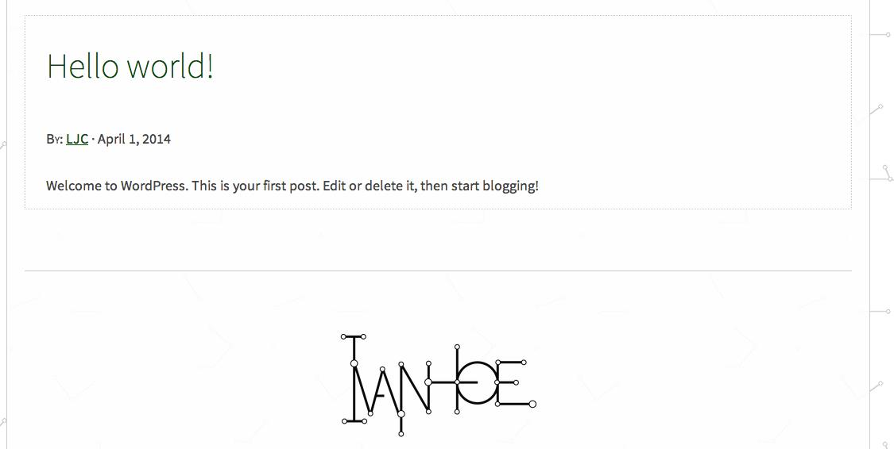
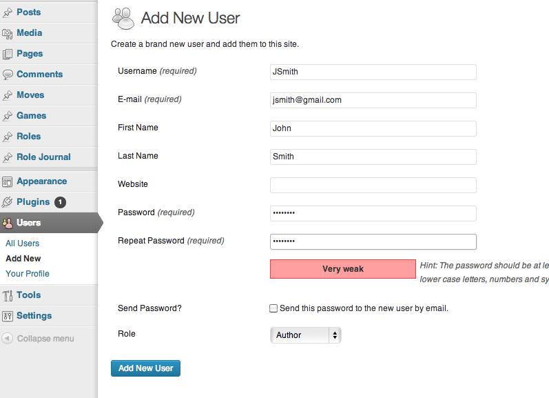
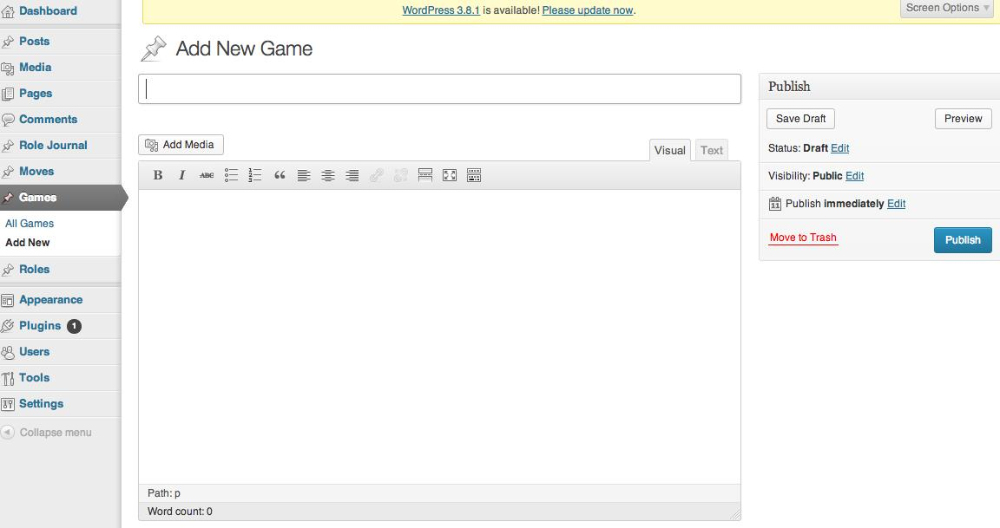
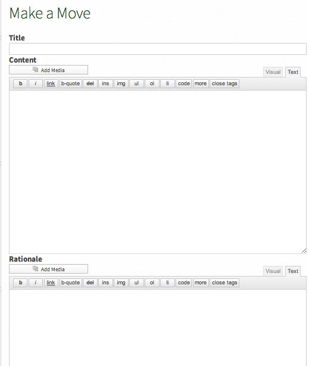

Documentation
Administrative Setup
- Download the zip file that we provide, unzip, and put it into the folder wp-content/themes.
- To activate the theme, login to the WP admin panel, go to Appearance, then find the Ivanhoe theme and activate it.
- If successful, you will see three additional custom post types: Moves, Games, and Roles. You can manage and edit custom post types from the Admin panel.
- To make a new game, you must go to the Admin panel. Click on Games, and Add a New Game.
Editing Welcome Post
To edit this post do the following:
- Log into your WordPress Administration Panel (Dashboard)
- Click on the “Posts” Tab on the left hand side of the screen
- Hover over the “Hello World!” Post – then click the “Edit” link below the title of the post.
- Edit the title and content fields to reflect the goals of your classroom into this space. Remember, students are able to access multiple games through this theme so this post can be as broad or specific as you would like it to be.
- When you are ready, click “Update.”
Adding Users
Once administrators have downloaded the theme they can invite users to participate in Ivanhoe one of two ways: adding users manually or allowing anyone to register. If you want control over who can access your learning environment the best option is to manually add users to your Ivanhoe theme. If you wish for users to access your games and create a larger network of users you should make your games available for anyone to register.
Adding Users Manually
- Log into your WordPress Administration Panel (Dashboard)
- Click on the “Users” Tab on the left hand side of the screen
- Click the “Add New” button at the top of the screen.
- Fill in the fields as required.
- Assign a Role: in order for users to adequately play the game you must assign them with at least an “author” status. You may elevate the roles if you wish (i.e. Editor or Administrator) but do not assign a lower status (i.e. Contributor or Subscriber).
- When all fields are complete click “Add New User.”
NOTE: You must assign users a “username” and “password” and provide the users e-mail address. We suggest making the username a variation of the user’s actual name and making the password something easy to remember. For example if the person who you wish to register’s name is John Smith an easy to assign username would be something like “JSmith” and the password could be “1234!@#$” – users have the ability to change both their username and password after accepting their invitation to play.
When you play Ivanhoe you can start by creating a new game, making a role, or by making a move inside of an existing game. When you are making a connection inside of an already existing game, you are creating a role or making a move, when you are building a new space for pedagogical play you are starting a new game.
To Start a New Game:
- Log into your WordPress Administration Panel (Dashboard)
- Click the “Games” Tab on the left hand side of the screen
- Click the “Add New” button at the top of the screen.
- Start filling in the blanks (title of game/summary of game/rules/etc)
- As needed add rules… (these sections are explained below)
- When you are ready, click “Publish”
When you have successfully created a game you will see a “view post” hyperlink at the upper part of the page. Click it to enter your game and begin playing!
Description of Game Fields:
Title
This is the title of your game. You can use h, or anything else you can think of to best express what your game entails and pique the interest of potential players. Try not to use the same title twice to avoid game-play confusion.
Add Media/Content
Arguably one of the most important aspects of the game the Add Media/Add Content feature allows you to shape the structure of your game. In this field we suggest listing the objective of your game (What do you want players to achieve? Do you want to have rules? Is there a way to win?). There are many ways you can play Ivanhoe. You can start with just the objective of the game and see where players take it. You can insert an image, a video, a music recording, or text and have people make new connections. You can start with a suggested list of roles or have players invent them on their own! The sky is the limit in terms of creativity and functionality so be sure to take some time to think about how you want to play the game before completing this section.
To Make a Role
- Choose a game that you would like to play.
- Once inside of the game carefully read the game description to give you an idea of what kind of role you want to create. The game you enter may have rules that pertain to the type of role you can create.
- Add a Title – what is the name of the role you are creating? Avoid using the same title as another person in the game to avoid game-play confusion.
- Role Thumbnail – this featured image is associated with your moves inside of the game and the image that other players will see during the game.
- Description – this section allows you to create an identity for your role. Who is it that you are playing? What characteristics are important for other players to know about you?
To Make a Move
After you have created a role you can make a move in two ways. You can start a new move or you can “respond to a move” that another player has made.
Making a new move
- To make a new move outside of an already existing move click on the “Make a Move” button in the upper right hand corner of your screen.
- Add a Title: What do you want your move to convey? Like other titles you can use a combination of words and characters that tell other players in the game what your move is trying to accomplish.
- Add Content: Add media and/or text relevant to your move. This is the information that other players will see so be sure it adequately describes what you are trying to do with this move as well as information needed so that others can play off of it. NOTE: If you are embedding a video into your post you must be in the “text” field not the “visual field.”
- Add Rational (optional): Depending on the settings of the game, you may need to complete the rational section. This section provides a bit more context for your move but is not visible to other users. The space should be used for players as a reminder for why they made the moves that they did. This information is also aggregated into a “Role Journal” so that players (and administrators) can see how moves fit together over time.
- When you are finished with your move click the “submit” button to make your move visible to other players in the game. Be sure to review your response before submitting, as you are unable to edit your move once it is played.
Responding to a move
- To respond to an existing move click the “Respond” button in the upper right hand corner of the move space.
- Add a Title: What do you want your move to convey? Like other titles you can use a combination of words and characters that tell other players in the game what your move is trying to accomplish.
- Add Content: Add media and/or text relevant to your move. Think about how this move connects to the move that you are responding to. NOTE: If you are embedding a video into your post you must be in the “text” field not the “visual field.”
- Add Rational (optional): Depending on the settings of the game, you may need to complete the rational section. This section provides a bit more context for your move but is not visible to other users. The space should be used for players as a reminder for why they made the moves that they did. This information is also aggregated into a “Role Journal” so that players (and administrators) can see how moves fit together over time.
- When you are finished with your move click the “submit” button to make your move visible to other players in the game. Be sure to review your response before submitting, as you are unable to edit your move once it is played.
Insert Media
If you wish to enhance your games, roles, or movies with media (photos, movies, songs) you will need to click on the “Add Media” button. Doing so will bring you to a space where you can upload more files or add files that have already been uploaded. Files that have already been uploaded are under “Media Library.”
To Upload a New File
- Click on Upload Files link
- Click on the “Select Files” button to upload a photo/movie from your harddrive or click on “Insert from URL” link on the left to add content already available on the Internet. If selecting a new file, choose the content you wish and then click the “open” button.
- Once file/URL had been selected click “Insert into Page”
Using the Media Library
Select the file that has already been uploaded and click “Insert into Page”